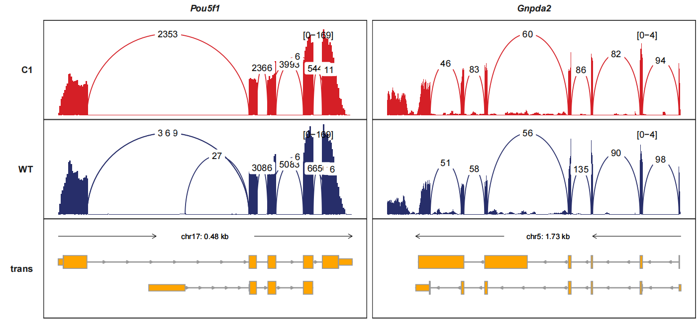
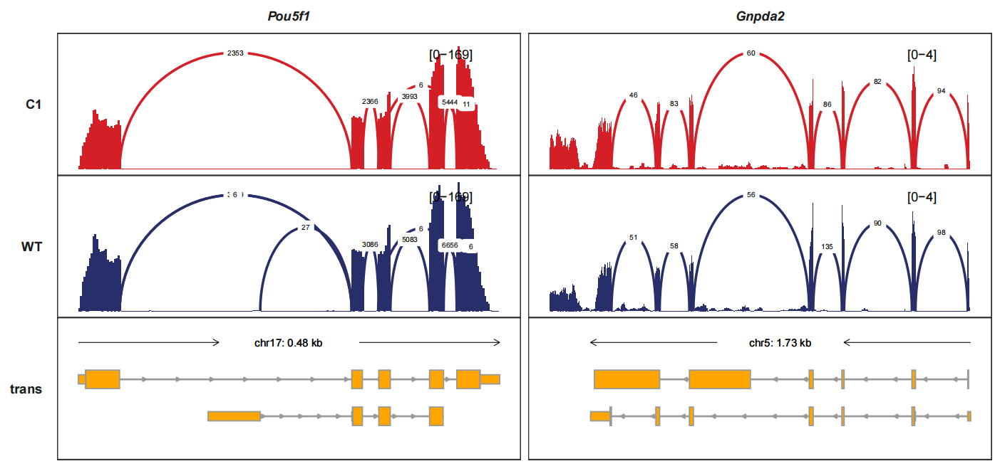
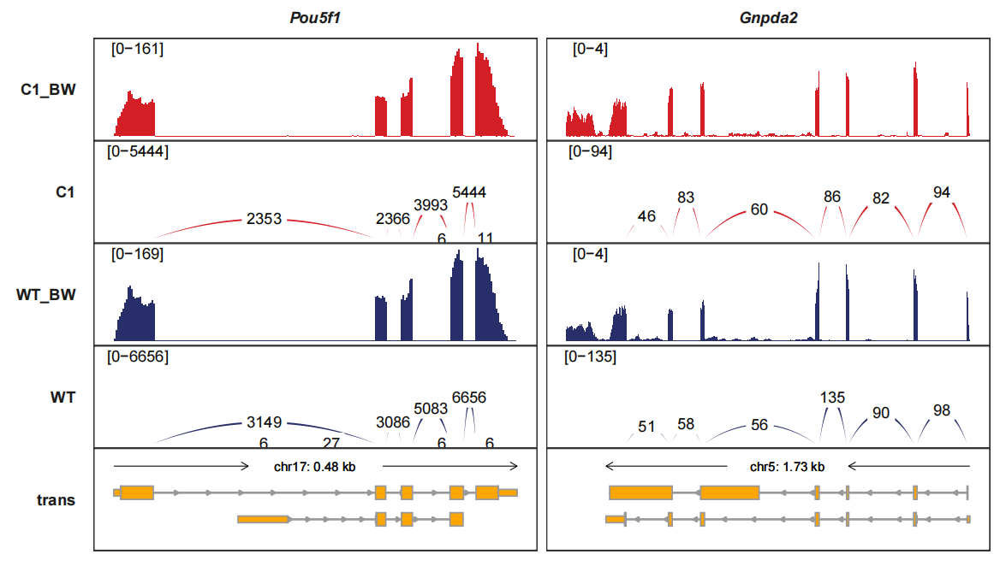
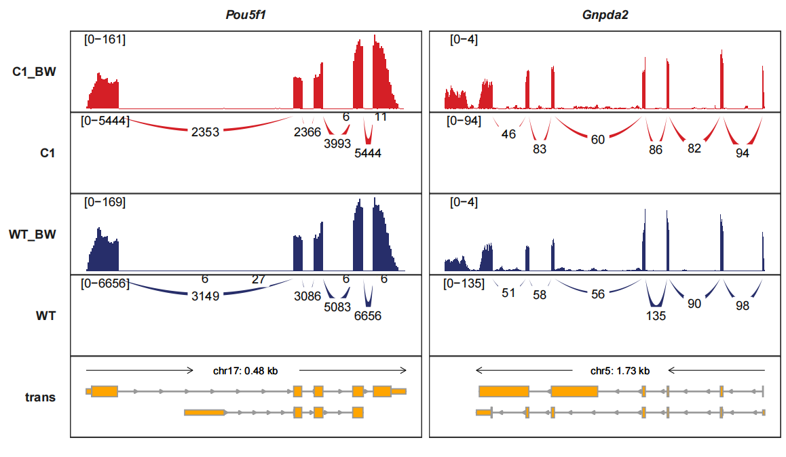
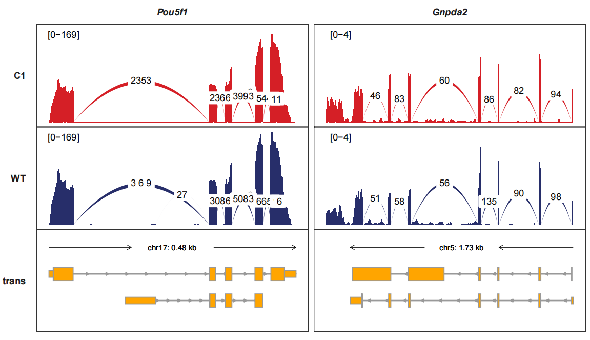

Chapter 8 Splice junction visualization
There have been some visualization tools for RNA different types of splice and junction events. The most popular tool is called sashimiplot with embeded into multiple splice-analysis tools. It is still not convenient to visualize the splice data with your own bigwig format data with significant differential splice sites information which produced from other softwares. The trackVisProMax also allows you plot the RNA splice and junctions data with your own data.
8.1 Data pareparation
Here we use RNA-seq as example data, first we extract all junctions from bam files:
bam_file <- list.files(path = "F:/junc-test/",
pattern = ".bam$",full.names = T)
bam_file
# [1] "F:/junc-test/C1.sorted.bam" "F:/junc-test/WT.sorted.bam"
junc_df <- loadJunction(data_path = bam_file,
file_name = c("C1","WT"))
junc_df <- junc_df %>% dplyr::filter(score >= 5)
# check
head(junc_df,3)
# seqnames start end score fileName
# 1 1 3154117 3159706 1 C1
# 2 1 3207318 3213608 1 C1
# 3 1 4492669 4493099 8 C1Load bigwig files:
# gtf
gtf <- rtracklayer::import.gff("Mus_musculus.GRCm38.102.gtf",format = "gtf") %>%
data.frame()
# load bigwig files
bw_file <- list.files(path = "F:/junc-test/",pattern = '.bw',full.names = T)
bw_file
# [1] "F:/junc-test/C1.BPM.bw" "F:/junc-test/WT.BPM.bw"
# select some chromosomes for test
bw <- loadBigWig(bw_file = bw_file,file_name = c("C1","WT"))
bw2 <- loadBigWig(bw_file = bw_file,file_name = c("C1_BW","WT_BW"))8.2 Visualization
Single gene test:
trackVisProMax(Input_gtf = gtf,
Input_bw = bw2,
Input_junction = junc_df,
fixed_column_range = F,
Input_gene = c("Actb"))
Note: The junction curve will be drawn together with siganal track if your junction fileName’s are same as bigwig files and junc_layer_combined should be setted to TRUE.
trackVisProMax(Input_gtf = gtf,
Input_bw = bw,
junc_layer_combined = T,
Input_junction = junc_df,
Input_gene = c("Pou5f1","Gnpda2")) signal_layer_junction_params and signal_layer_junction_label_params control the curve graphics and text label graphics. Here we change the linewidth and label size:
trackVisProMax(Input_gtf = gtf,
Input_bw = bw,
junc_layer_combined = T,
Input_junction = junc_df,
Input_gene = c("Pou5f1","Gnpda2"),
signal_layer_junction_params = list(linewidth = 1),
signal_layer_junction_label_params = list(size = 2))
Drawing the junctions track separately and we can turn the curve style into band-curve style with add_band_line=TRUE. The width of line is relatted with the junction counts which means using the score column:
trackVisProMax(Input_gtf = gtf,
Input_bw = bw2,
Input_junction = junc_df,
fixed_column_range = F,
add_band_line = T,
signal_range_pos = c(0.1,0.9),
Input_gene = c("Pou5f1","Gnpda2"),
sample_order = c("C1_BW","C1","WT_BW","WT"))
Reversing the junction tracks. band_width controls the curve witdth:
trackVisProMax(Input_gtf = gtf,
Input_bw = bw2,
Input_junction = junc_df,
fixed_column_range = F,
add_band_line = T,
signal_range_pos = c(0.1,0.9),
Input_gene = c("Pou5f1","Gnpda2"),
sample_order = c("C1_BW","C1","WT_BW","WT"),
band_width = 1,
reverse_y_vars = c("C1","WT"))
Combining the signal tracks and junction tracks:
trackVisProMax(Input_gtf = gtf,
Input_bw = bw,
junc_layer_combined = T,
Input_junction = junc_df,
signal_range_pos = c(0.1,0.9),
add_band_line = T,
Input_gene = c("Pou5f1","Gnpda2"))